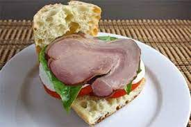

Ham Sandwich - with a twist!

You know you've been yearning for a pork spear!
If you're like me, nothing screams "Tuscany" like a nice, dry, ham sandwich. Add some radishes and leaves to the mix, and you've got a swell meal!
Share it with a friendly neighborhood squirrel, or a hobo, because you probably don't have many friends if you need this recipe to make a ham sandwich
As with any meal prep, the key is to get in there all nice and deep like. So, hold onto your butts - let's make a goddam ham sandwich
Ingredients
- One pair of balls that would put the Statue of Liberty to shame. And if you don't think she's packing, get the hell out of my country
- One rasher of bacon. Unless sliced ham is made of a different part of the pig. If that's the case, get the other pig part
- Bag of Hawaiian bread. No need to get weird with every detail. It's tasty bread and will make one hell of a ham sandwich
- Some radishes - note, beets will do fine here as a substitute
- Three handfuls of leaves. The backyard variety are fine
- Enough Ragu to submerge the entire ham sandwich in
Preparation
- Meet a girl
- Marry that girl
- Get your wife to build you a goddam ham sandwich
- If you are a girl, refer to the recipes for lasagna or Spaghet and swap out one of the ingredients for Hawaiian bread